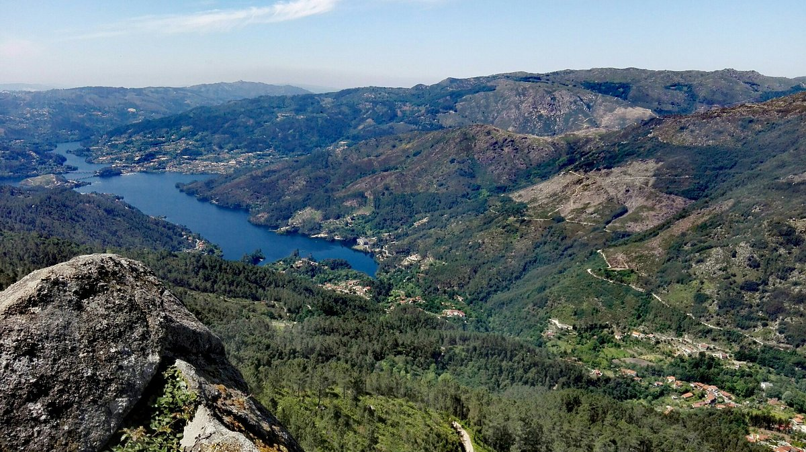
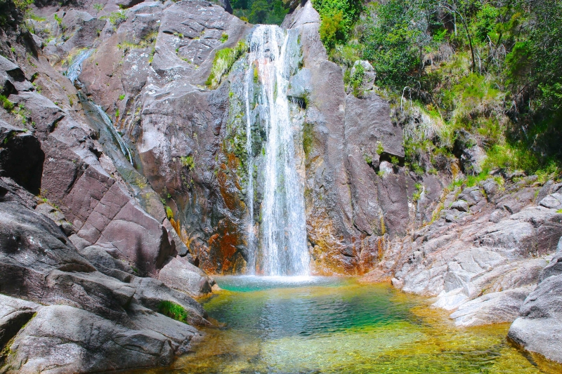
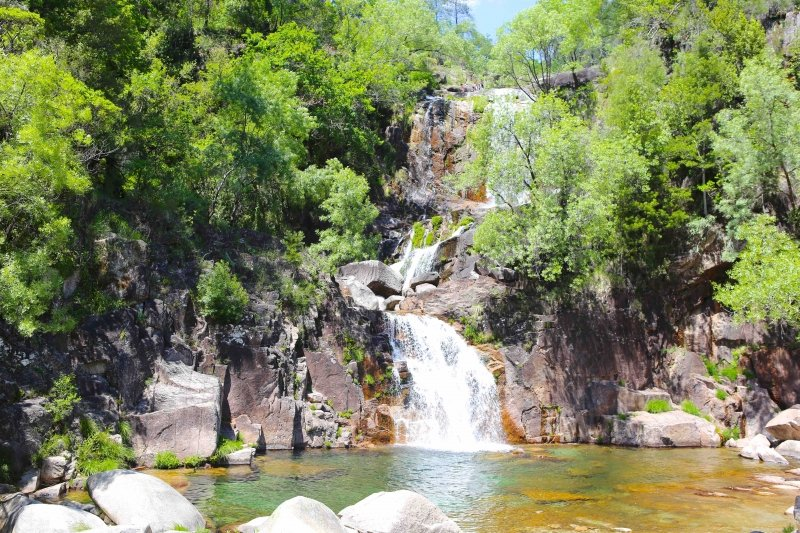
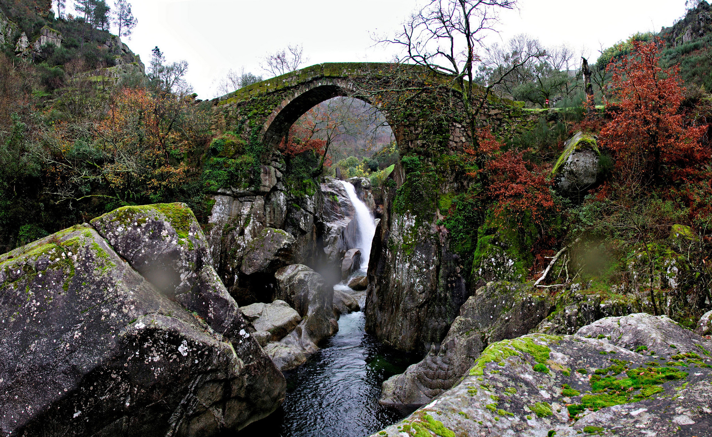

× 
O Gerês é caracterizado por ter lindas paisagens, ótimo para quem gosta de andar com máquina fotográfica na mão. Aqui deixamos quatro boas opções para visitar no Gerês.
Está localizado em Terras de Bouro, a mais de 800 metros de altitude. A partir do Miradouro é possível avistar a Albufeira da Caniçada, os vilarejos e os rios contornando a serra. É acessível de carro.
O melhor horário para visitá-la, é entre as 12h e as 14h. É possível chegar através de uma estrada de terra batida, que se inicia a 2km da Aldeia da Ermida.
Uma ótima opção para ser visitada no verão, pois esta cascata forma várias piscinas naturais ajudando a refrescar no verão. É possível chegar até ao início da cascata de carro.
Localiza-se sobre o rio Rabagão, na freguesia de Ferral, concelho de Montalegre. É conhecida popularmente como a Ponte do Diabo onde, diz a lenda que, foi construída pelo próprio Diabo. O que é certo, é que foi palco de lutas e combates entre os Portugueses e as tropas Francesas de Soult.
